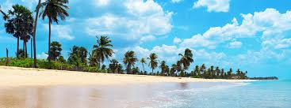
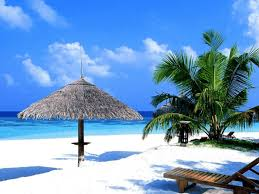

Nilaveli Beach

Nilaveli is a coastal resort town and suburb of the Trincomalee District, Sri Lanka located 16 km northwest of the city of Trincomalee.
A historically popular Tamil village and tourist destination of the district alongside the nearby Uppuveli,
the numbers of visitors declined following the 2004 Indian Ocean tsunami and Sri Lankan Civil War, but have risen again since 2010.
Pigeon Island National Park, one of the two marine national parks of the region is situated 1 km off the coast of Nilaveli,
its many species of vegetation, coral and reef fish contributing to Nilaveli's rich biodiversity.
Pronounced "Nilāveli", "Nilā" extolls the night's moon-shine over the "vèli", a Sri Lankan Tamil language term for land or open-space.
The 10th century CE Tamil Nilaveli inscriptions mention the Koneswaram temple as having received
a land grant in the Tamil country of one thousand seven hundred and ten acres (two hundred and fifty four vèli)
of dry and wet land to meet its daily expenses - revealing the temple's role in providing various services to the local community by 900-1000 CE.
 Location (Nilaveli Beach)